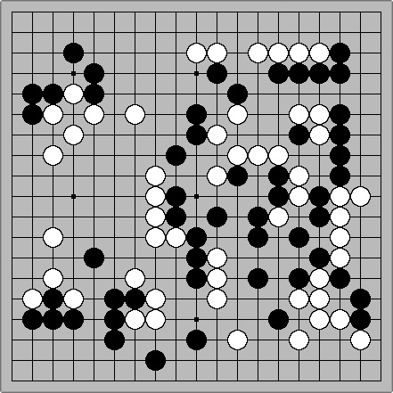

nomadic go society stands with the palestinian people
next event: 12/03 2 pm, whole foods second floor, 95 e houston st
(location change due to weather conditions)
available boards: 3
available books:
- go: a complete introduction to the game by cho chikun
- https://archive.org/details/Go_A_Complete_Introduction_to_the_Game_by_Chikun_Cho/mode/2up
- nomadology: the war machine by gilles deleuze and felix guattari
- https://archive.org/details/wormwood_2010_nomadology/mode/2up
additional resources:
- https://monoskop.org/Monoskop
- https://www.privacyguides.org/en/tools/
- https://www.eff.org/pages/tools
—

atomic bomb game, hashimoto utaro and iwamoto kaoru
outskirts of hiroshima, august 6, 1945
the technological society's being-toward-death
lies in its confrontation with the singularity
our potential to live radically, authentically
and to resist collectively in the here and now
lies in our recognition of this finite horizon
—
an independent class of intellectuals does not exist
every social group organically creates its own breed
and when the desires of such groups
clash with the hegemonic structures
the cognitive workers must become saboteurs—
industrial saboteurs of the post-fordist era
...hooligan-consultants...
'reality is made up of quanta of action...'